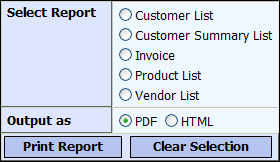

DLG_REPORTS Dialog Component
Purpose
The DLG_REPORTS dialog component selects an administrative report to run. The report options are:
Customer List
Customer Summary List
Invoice
Product List
Vendor List
The DLG_REPORTS dialog component includes options to change the report output format. The options are:
PDF
HTML

Description
The DLG_REPORTS dialog component dynamically populates the radio button selections from the web_reports table. While the list displays the rpt_name field, the user's selection returns the rpt_id field. Using a table lookup like this makes it possible to add reports to the application later, without having to change the dialog component. The AfterValidate contains the code that runs the selected report.
Notable Dialog Control Property Settings
|
Control |
Property |
Description |
|
reports |
Control Settings > Control type |
Set to "RadioButton" |
|
Control Settings > Validation rules |
General > Enable rules set to TRUE. General > Require value set to TRUE. | |
|
RadioButton Properties > Choices |
Define Choices > List type is set to "Dynamic". Data Source > Data source type is set to "DBF-Table". Data Source > Table name is set to "web_reports". Data Source > Display value is set to "Rpt_Name". Data Source > Stored value is set to "Rpt_Id". | |
|
outputas |
Control Settings > Control type |
Set to "RadioButton" |
|
Control Settings > Validation rules |
General > Enable rules set to TRUE. General > Require value set to TRUE. | |
|
RadioButton Properties > Choices |
Define Choices > List type is set to "Static". Defince Choices > Choices is set to "PDF", "HTML". |
Notable Component Property Settings
|
Property |
Description |
|
Layout Options > Layout Calculation Mode |
Precalculate Layout |
|
Submit/Reset Buttons > Submit button label |
Changed from "Submit" to "Print Report" |
|
Submit/Reset Buttons > Reset button label |
Changed from "Reset" to "Clear Selectionl" |
Event Code
The AfterValidate event code was built by modifying the code created by the Print Reports genie from the Insert button in the event.
|
outputAs = lower( alltrim(CurrentForm.Controls.OutputAs) ) dim filter as c dim order as c Filter = ".T." Order = "" Dim filename as c ' replace code generated by genie to create a file name based on the report name dim flname as c flname = word(alltrim(CurrentForm.Controls.Reports),1,"@") 'get report name from radio control value that includes full path flname = stritran(flname," ","_") + "_"+dtoc(date(),"1-")+"." + OutputAs ' replace spaces with underscore and add a date value filename = session.session_folder + flname filename = report.saveas(alltrim(CurrentForm.Controls.Reports),outputAs,filter,order,filename,.f.) if file.exists(filename) currentform.RedirectTarget = session.session_url + flname+ "?" + time("hms3") end if |
See Also
Supported By
Alpha Five Version 8 and Above